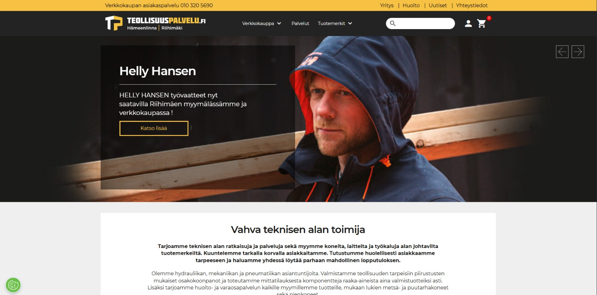
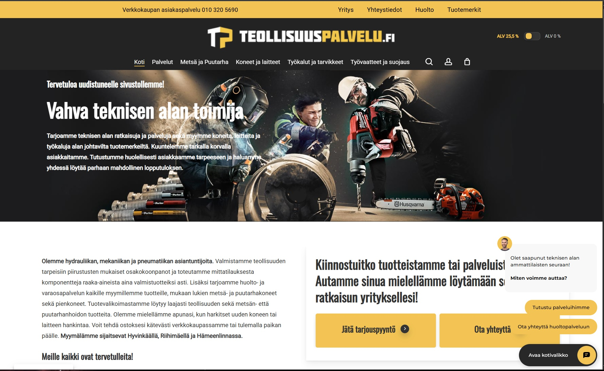

Aloittaessani TP-projektissa käynnistimme heti verkkokaupan migraation MyCashflow-alustalta WordPress/WooCommerce-ympäristöön. Tavoitteena oli yhtenäistää toimintaa toisen verkkokaupan kanssa, varmistaa ERP-integraation toimivuus sekä turvata liiketoiminnan jatkuvuus ilman yllättäviä katkoksia.
Migraation aikana toimin teknisenä vastuuhenkilönä sekä yritysjohdon ja teknisten toteuttajien välisenä linkkinä. Raportoin säännöllisesti mitä on tehty, mitkä ovat keskeiset uhkat ja mitä seuraavaksi tehdään, ja varmistin, että kaikki sidosryhmät tiesivät mitä tehdään ja milloin tehdään.
Migraation valmistuttua siirryin jatkokehitykseen: toteutin useita custom WooCommerce -lisäosia, tein ulkoasun räätälöintejä sekä paransin verkkokaupan suorituskykyä ja käytettävyyttä.
Alla vertailu: ensimmäinen kuva on MyCashflow-etusivusta, jälkimmäinen kuva uudesta etusivusta.

Ensimmäinen kuva näyttää lähtötilanteen MyCashflow-alustalla ennen migraatiota. Uudistuksen tavoitteena oli selkeyttää etusivun rakennetta, parantaa tuotteiden löydettävyyttä ja tehdä ostopolusta käyttäjälle suoraviivaisempi.

Olen tehnyt TP- ja PKC-verkkokauppoihin liittyen laajasti käytännön verkkokauppakehitystä, ylläpitoa ja liiketoimintaa tukevia teknisiä ratkaisuja WordPress- ja WooCommerce-ympäristössä. Roolini on ollut yhdistää asiakasnäkymän toimivuus, taustalogiikka, tuotetieto, toimitusmallit ja ylläpidettävyys tuotannossa luotettavasti toimivaksi kokonaisuudeksi.
Olen rakentanut ja ylläpitänyt useita räätälöityjä WooCommerce-lisäosia sekä tuotantokriittisiä korjauksia. Työhön on kuulunut muun muassa toimitusaikojen näyttäminen tuotemerkkikohtaisesti, ennakkomyyntilogiikan toteutus, hallintapuolen työkalut toimitusaikojen keskitettyyn ylläpitoon sekä käytännön ongelmien ratkaisu ilman manuaalista koodimuokkausta arjen ylläpidossa.
Hinnoittelun osalta olen korjannut sekä näkyvän hintatiedon että rakenteisen datan (schema.org Offer) toimivuutta. Olen toteuttanut variaatiohinnoittelun URL-parametrien perusteella niin, että oikea hinta näkyy asiakkaalle oikein myös välimuistin kanssa (esim. LiteSpeed cache vary), ja estänyt tilanteita, joissa lisäosien yhteisvaikutukset rikkovat hinnan päivityksen tai ostoskorin toiminnan.
Saatavuus- ja varastoviestinnässä olen kehittänyt toimipistekohtaista UI-logiikkaa sekä korjannut variaatio- ja bundle-tuotteiden näkyvyysongelmia. Bundle-tuotteissa olen vienyt toteutusta suuntaan, jossa asiakkaalle näytetään yksi oikea kokonaissaatavuus komponenttikohtaisten irrallisten rivien sijaan. Lisäksi olen rakentanut automaatiota, jolla WooSB-bundleja muodostetaan ja päivitetään ERP-attribuuttien perusteella.
Toimituslogiikan ja taustaprosessien osalta olen toteuttanut sääntöpohjaista toimitustapojen näkyvyyttä, toimitusluokkien määrityksiä mittojen ja painon perusteella sekä ratkaisuja, joilla ERP:n CSV-viennit ja toimittajien XLSX-päivitykset saadaan käsiteltyä hallitusti. Olen myös toteuttanut Omnibus-hintaseurantaan liittyviä toimintoja (30 päivän alin hinta) huomioiden tietoturvan, suorituskyvyn ja ylläpidettävyyden.
Teknologiat ja työskentelytapa: WordPress, WooCommerce, PHP (plugin-arkkitehtuuri), JavaScript/jQuery, HTML/CSS sekä integraatiot ERP/CSV/SOAP-rajapinnoissa. Toteutan muutokset tuotantolähtöisesti, vaiheittain ja testattavasti siten, että regressioriski pysyy hallinnassa ja verkkokaupan asiakaspolku säilyy vakaana.
Mitä tekee: näyttää tuotteen toimitusajan brändin (attribuutti/taksonomia pa_tuotemerkki) mukaan ja tukee ennakkomyyntiä (päivämäärä-attribuutti), jossa toimitus määräytyy päivämäärän perusteella.
<?php
if (!defined('ABSPATH')) exit;
define('RTeollisuuspalvelu_DELIVERY_OPTION_KEY', 'rTeollisuuspalvelu_delivery_times_by_brand');
define('RTeollisuuspalvelu_BRAND_TAXONOMY', 'pa_tuotemerkki');
function rTeollisuuspalvelu_wp_timezone(): DateTimeZone {
if (function_exists('wp_timezone')) return wp_timezone();
$tz = get_option('timezone_string') ?: 'UTC';
return new DateTimeZone($tz);
}
add_action('woocommerce_single_product_summary', function () {
global $product;
if (!$product instanceof WC_Product) return;
$terms = wp_get_post_terms($product->get_id(), RTeollisuuspalvelu_BRAND_TAXONOMY);
$brand = $terms && !is_wp_error($terms) ? $terms[0]->slug : '';
$map = (array) get_option(RTeollisuuspalvelu_DELIVERY_OPTION_KEY, []);
$delivery = $brand && isset($map[$brand]) ? sanitize_text_field($map[$brand]) : '';
if ($delivery !== '') {
echo '<p class="rTeollisuuspalvelu-delivery-time"><strong>Toimitusaika:</strong> ' . esc_html($delivery) . '</p>';
}
}, 35);
Mitä tekee: kun variaatio on esivalittu URL-parametreilla (esim. ?attribute_pa_*), lisäosa varmistaa että hinta näytetään oikein, schema.org Offer muodostuu oikein ja LiteSpeedille lisätään tarvittavat cache vary -parametrit.
<?php
if (!defined('ABSPATH')) exit;
final class Teollisuuspalvelu_Google_Price_Fix {
public static function init(): void {
add_action('plugins_loaded', [__CLASS__, 'hooks'], 20);
}
public static function hooks(): void {
if (!class_exists('WooCommerce')) return;
add_filter('woocommerce_get_price_html', [__CLASS__, 'price_html'], 100, 2);
add_filter('woocommerce_structured_data_product', [__CLASS__, 'schema_offer'], 100, 2);
// LiteSpeed: variaatio-URL:t omiksi cache-versioiksi
add_filter('litespeed_cache_vary_get', [__CLASS__, 'vary_params']);
}
public static function vary_params($vary) {
$vary[] = 'attribute_pa_koko';
$vary[] = 'attribute_pa_vari';
return $vary;
}
}
Teollisuuspalvelu_Google_Price_Fix::init();
Mitä tekee: rakentaa ja päivittää WPClever WooSB bundle -tuotteet automaattisesti tuoteattribuuteista (bundle-nimi, komponentin yksikköhinta, komponentin määrä).
<?php
if (!defined('ABSPATH')) exit;
final class Teollisuuspalvelu_ERP_WooSB_Bundle_From_Attributes {
private const ATTR_BUNDLE_NAME = 'pa_bundle_nimi';
private const ATTR_UNIT_PRICE = 'pa_bundle_hinta';
private const ATTR_QTY = 'pa_bundle_maara';
private const WOOSB_IDS_META_KEY = 'woosb_ids';
/** Päivittää WooSB:n "woosb_ids" -metan muodossa: product_id/qty/price */
private static function update_bundle_meta(int $bundle_id, array $rows): void {
$parts = [];
foreach ($rows as $r) {
$pid = (int) ($r['product_id'] ?? 0);
$qty = (float) ($r['qty'] ?? 1);
$price = (float) ($r['unit_price'] ?? 0);
if ($pid <= 0) continue;
$parts[] = "{$pid}/{$qty}/{$price}";
}
update_post_meta($bundle_id, self::WOOSB_IDS_META_KEY, implode(',', $parts));
}
}
Mitä tekee: lisää YITH WooCommerce Ajax Navigation -filtterit tuotteiden listauksen yläpuolelle (category/shop), jotta suodatus on selkeästi asiakkaan näkyvissä.
<?php
if (!defined('ABSPATH')) exit;
final class RTeollisuuspalvelu_Filters {
public function __construct() {
add_action('woocommerce_before_shop_loop', [$this, 'render_filters'], 5);
}
public function render_filters(): void {
if (!function_exists('do_shortcode')) return;
// Esim. YITH shortcode (vaihda tähän teidän käytössä oleva)
echo '<div class="rTeollisuuspalvelu-filters">';
echo do_shortcode('[yith_wcan_filters slug="tuotefiltterit"]');
echo '</div>';
}
}
new RTeollisuuspalvelu_Filters();
Mitä tekee: lisää tuotesivulle varaston/saatavuuden UI:n (pallot, toimipaikkakohtainen saldo, bundle-logiikan huomiointi) ja lataa JS/CSS tuotantotyyliin filemtime‑versioinnilla.
<?php
add_action('wp_enqueue_scripts', function () {
if (!is_product()) return;
$css_path = get_stylesheet_directory() . '/assets/css/stock-widget.css';
$js_path = get_stylesheet_directory() . '/assets/js/stock-widget.js';
wp_enqueue_style(
'stock-widget',
get_stylesheet_directory_uri() . '/assets/css/stock-widget.css',
[],
file_exists($css_path) ? filemtime($css_path) : null
);
wp_enqueue_script(
'stock-widget',
get_stylesheet_directory_uri() . '/assets/js/stock-widget.js',
['jquery'],
file_exists($js_path) ? filemtime($js_path) : null,
true
);
}, 20);